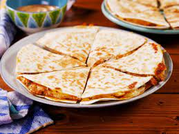

Quesadillas

Description
A fun and simple dish!
Ingredients
Flour Tortillas (1 bag)
Mushrooms (1 container)
Shredded Chiken (1/2 container)
Onion (1/2)
Mexican Cheese (1 bag)
Olive Oil
Steps
Prep: TBA
TBA
TBA